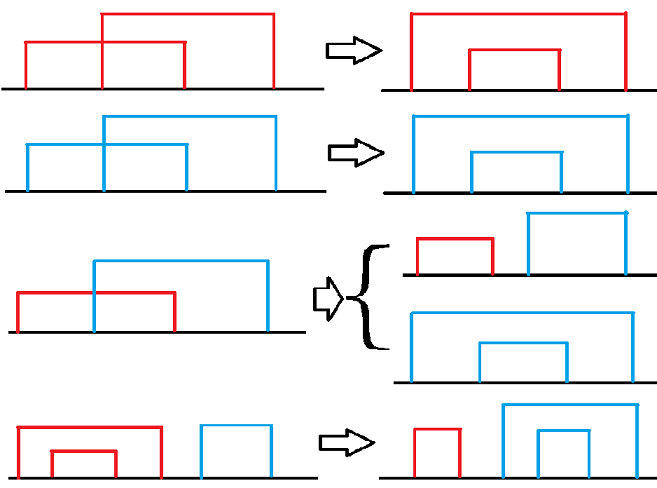

给一个长度为 2n 的序列，要求将其两两匹配成 n 组，假设第 i 组为 (xi,yi)，求 maxi=1n(xi+yi)modm 的最小值，1≤n≤105,1≤m≤109,0≤ai<m。
我们首先我们有：
(x+y)modm={x+yx+y−mx+y≤mx+y>m
接下来我们看几种情况：

如果我们有 x1≤x2≤x3≤x4，那么我们有这样 4 中情况：
第一种，x3+x4<m，那显然 (x1,x4),(x2,x3) 更优。
第二种，x1+x2≥m，和第一种一样。
第三种，{x1+x3<mx2+x4≥m，考虑到 x2+x4−m<x2，故有 max{x1+x3,x2+x4−m}=x1+x3，而考虑到 {x1+x2≤x1+x3x3+x4−m<x3，故有 max{x1+x3,x2+x4−m}≥max{x1+x2,x3+x4−m}。所以 (x1,x2),(x3,x4) 一定比 (x1,x3),(x2,x4) 优。
我们再来看 (x1,x4),(x2,x3) 的情况。如果有 {x1+x4≥mx2+x3≥m，那就有 {x1+x4−m<x1x2+x3−m<x2，所以 max{x1+x4−m,x2+x3−m}<x2≤max{x1+x2,x3+x4−m}，此时 (x1,x4),(x2,x3) 的方案更优。但是如果有 x1+x4≤m 或是 x2+x3≤m，则答案将会更大。
第四种，⎩⎪⎪⎪⎨⎪⎪⎪⎧x1+x4<mx2+x3<mx3+x6≥mx4+x5≥m。根据前面的讨论，我们仅需比较 (x1,x4),(x2,x3),(x5,x6) 和 (x1,x2),(x3,x4),(x5,x6) 即可，不难发现 ⎩⎪⎨⎪⎧x1+x2≤x1+x4x3+x6−m<x3≤x2+x3x4+x5−m≤x5+x6−m，于是 max{x1+x2,x3+x6−m,x4+x5−m}≤max{x1+x4,x2+x3,x5+x6−m}。
根据第一、二、三种情况，我们发现，最终的划分结果肯定是被分成两部分，左边部分最小的匹配，次大的和次小的匹配……右边也这样匹配。其中左边所有的匹配 (x,y) 都有 x+y<m，右边的匹配 (x,y) 都有 x+y≥m。
根据第四种情况，我们可以发现蓝色的匹配数越多越好，于是我们考虑二分蓝色的匹配数量，最终确定答案。
代码可以看 这里。